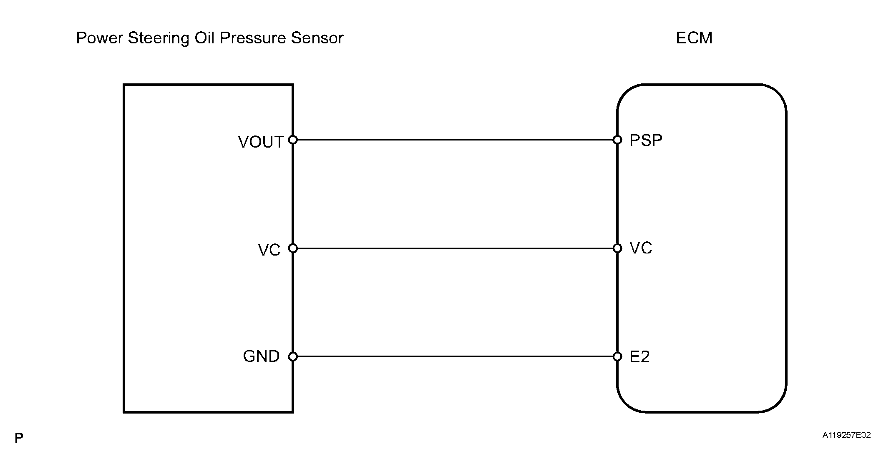

DTC P0550 Power Steering Pressure Sensor Circuit Malfunction; DTC P0552 Power Steering Pressure Sensor Circuit Low Input; DTC P0553 Power Steering Pressure Sensor Circuit High Input: Wiring Diagram

Courtesy of © TOYOTA, LICENSE AGREEMENT TMS1002